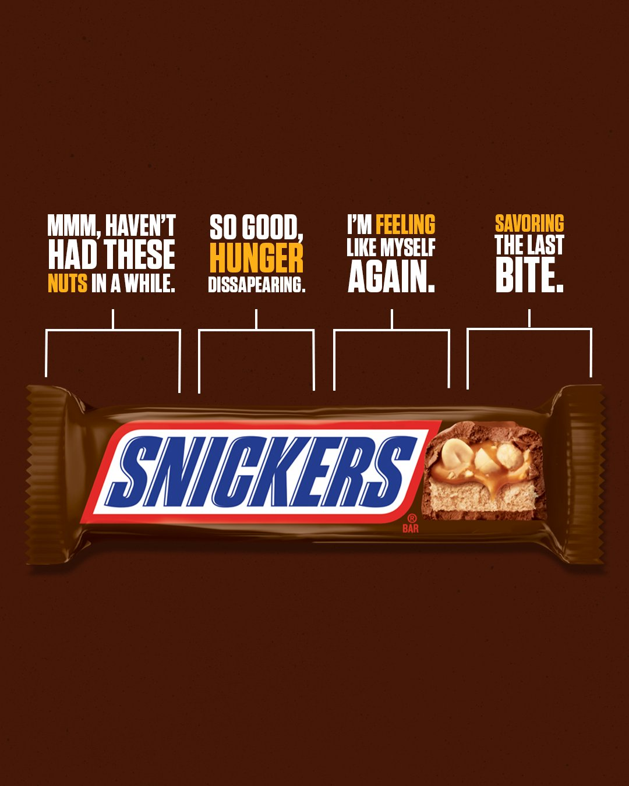

Onze Producten
- Alles weergeven
- Creamy
- Ijs
- Recepten
- Ons Verhaal
Over SNICKERS.
EEN STUKJE GESCHIEDENIS.
Het lekkerste verhaal ooit verteld.
1930
In de dertiger jaren had familie Mars naast andere huisdieren ook een gezinspaard. Dit paard droeg de naam Snickers, de SNICKERS reep is naar dit paard vernoemd. Deze reep werd gemaakt in Amerika, om precies te zijn in Chicago, en koste destijds 5 cent.
1967-1990
Dit heerlijke product kwam in 1968 naar het Verenigd Koningkrijk, onder de iconische naam MARATHON. Later, in 1990 werd deze naam veranderd in SNICKERS.

2010
De bekroonde campagne “je bent jezelf niet als je trek hebt” wordt gelanceerd in 2010 en erg goed ontvangen. In deze campagne wordt op een originele en grappige manier duidelijk gemaakt wat trek met je kan doen. Onder andere de iconische Betty White was een grote ster in deze campagne.
2019
SNICKERS Crisp wordt gelanceerd. Liefhebbers van gepofte rijst, chocolade, karamel en pinda's kunnen hun geluk niet op. Het heeft de vertrouwde smaak van SNICKERS met wat extra luchtigheid.
2021
De smaak peanut butter is ontzettend populair en heeft veel liefhebbers, in 2021 lanceert Snickers vol trots de Snickers Creamy Peanut Butter variant.